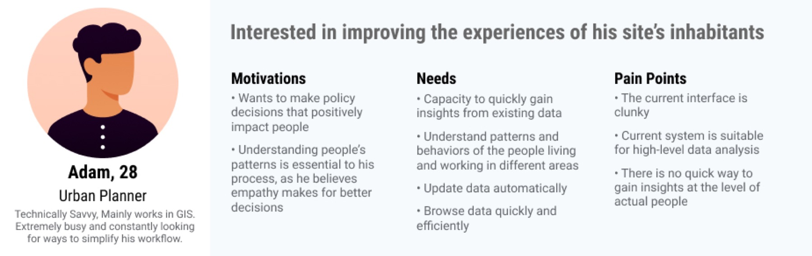
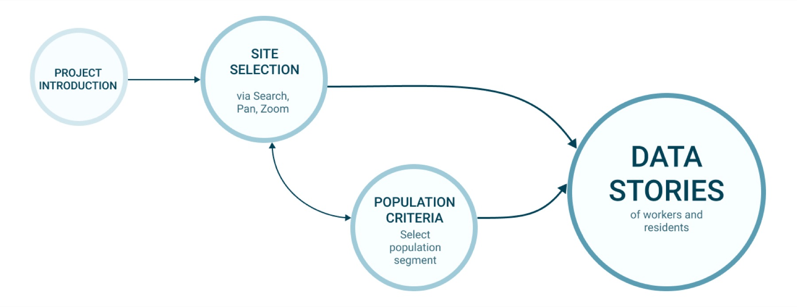

Beyond the Blue Dot
Who lives here? Who works here? A web tool that turns census data into short stories about the people in a place.

01The problem
Say you’re planning a transit project and want to disrupt people’s days as little as possible. You need to know who lives and works nearby, how they get around and what they earn.
Getting that from GIS takes days of wrangling. Community meetings help, but they don’t represent everyone. There was no quick way to see a place at the scale of one person.
02The tool
Pick a location and a profile. The tool builds a narrative about a typical or outlier resident or worker from national data, so it works anywhere in the US.
The name is a nod to the blue dot that stands for you in Google Maps. This one treats the dot as a person.


Estimating pedestrian activity

Say hello.
Working on something for the built environment? I’d love to hear about it.